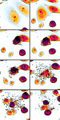

apoptosis

Definition: Apoptosis (from Ancient Greek: ἀπόπτωσις, romanized: apóptōsis, lit. 'falling off') is a form of programmed cell death that occurs in multicellular organisms. Biochemical events lead to characteristic cell changes (morphology) and death. These changes include blebbing, cell shrinkage, nuclear fragmentation, chromatin condensation, DNA fragmentation, and mRNA decay. The average adult human loses between 50 and 70 billion cells each day due to apoptosis. For an average human child between eight and fourteen years old, approximately twenty to thirty billion cells die per day.In contrast to necrosis, which is a form of traumatic cell death that results from acute cellular injury, apoptosis is a highly regulated and controlled process that confers advantages during an organism's life cycle. For example, the separation of fingers and toes in a developing human embryo occurs because cells between the digits undergo apoptosis. Unlike necrosis, apoptosis produces cell fragments called apoptotic bodies that phagocytes are able to engulf and remove before the contents of the cell can spill out onto surrounding cells and cause damage to them.Because apoptosis cannot stop once it has begun, it is a highly regulated process. Apoptosis can be initiated through one of two pathways. In the intrinsic pathway the cell kills itself because it senses cell stress, while in the extrinsic pathway the cell kills itself because of signals from other cells. Weak external signals may also activate the intrinsic pathway of apoptosis. Both pathways induce cell death by activating caspases, which are proteases, or enzymes that degrade proteins. The two pathways both activate initiator caspases, which then activate executioner caspases, which then kill the cell by degrading proteins indiscriminately.
Source: Wikipedia
Wikipedia Page (Something wrong with this association? Let us know.)
Wikidata Page (Something wrong with this association? Let us know.)